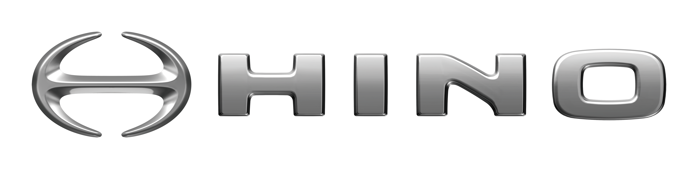
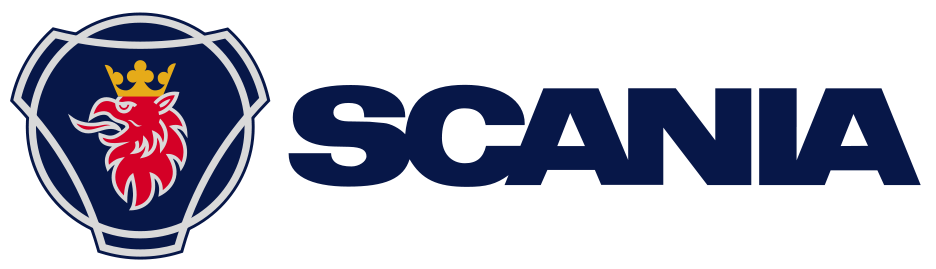
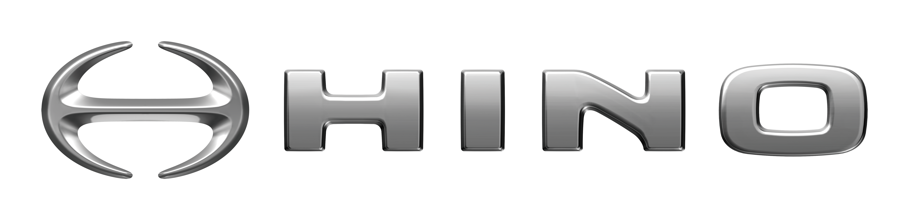
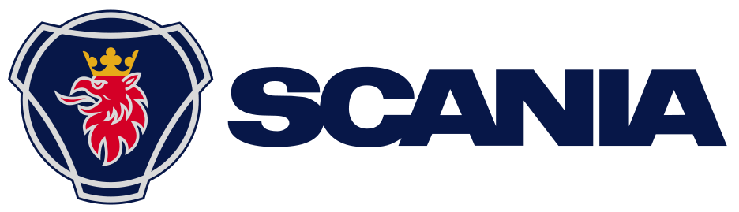

Unit Elegan & Berkelas
Kami menyiapkan unit sesuai dengan kebutuhan Anda. Terdapat berbagai pilihan unit yang tersedia. Untuk perjalanan wisata, keluarga hingga untuk kebutuhan bisnis atau korporat. Rasakan kenyamanan perjalanan dengan PO. HERFINDO RAYA UTAMA.
Start from Rp 2.000.000,-/hari
 


